Rijtuig 5503 gearriveerd in Rotterdam en meer...
- zondag 30 november 2008 21:41
- Geschreven door Joachim
Het derde RandstadRail-rijtuig, 5503, werd vorige week woensdag afgeleverd aan de lijnwerkplaats Waalhaven. De volgende dag werd het nieuwe metrorijtuig daar opgehaald door de rijtuigen 5411 en 5301, om vervolgens overgebracht te worden naar de remise 's-Gravenweg. Daar zal het metrorijtuig de komende weken beproefd worden.
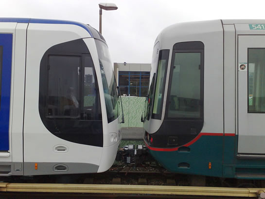
"Nieuwer" gekoppeld aan "nieuw". Rijtuigen 5301 en 5411 (foto) hebben rijtuig 5503 net overgebracht vanaf de lijnwerkplaats Waalhaven.
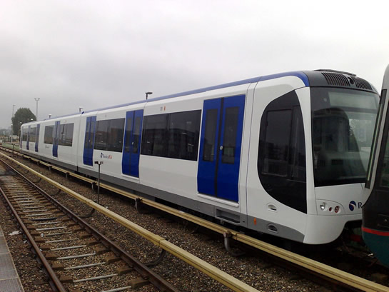
Het rijtuig is nog niet voorzien van uitgebreide bestickering. Het is nog onbekend of ook dit rijtuig een "testvoertuig" wordt met eenzelfde uitmonstering als de rijtuigen 5501 en 5502.
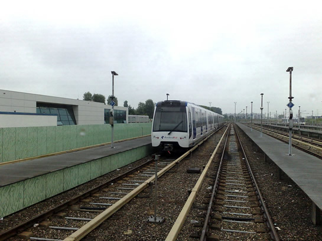
Het nieuwe rijtuig 5503 op spoor 330 van emplacement 's-Gravenweg. Geheel rechts maakt rijtuig 5501 een testrit.
Testritten RSG3-materieel
De testritten met het reeds aanwezige RSG3-materieel (5501/5502) verlopen voorspoedig. Vorige week werden metingen gedaan met éénderde belading, deze week wordt verder getest met tweederde belading. De meeste testritten worden uitgevoerd met "Testvoertuig 1". Om de dag wordt getest op het emplacement, in de tussenliggende nachten wordt er op de hoofdbaan gereden. Volgende week worden mogelijk de eerste testritten op de hoofdbaan, tussen de reizigersexploitatie door.
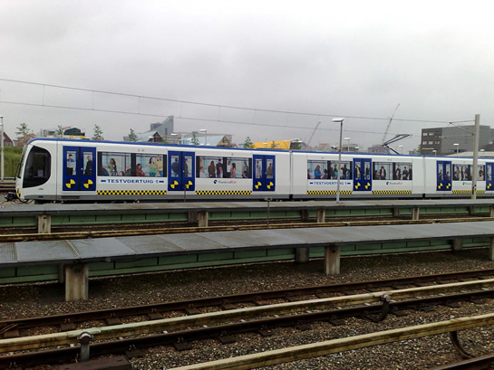
Rijtuig 5501 maakt een testrit in sneltrambedrijf op het doorgaande spoor 338 van emplacement 's-Gravenweg.
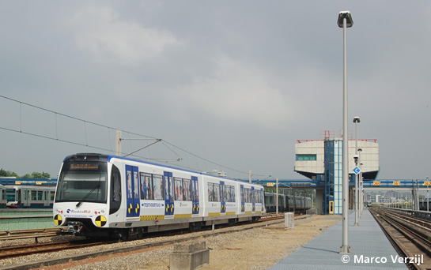
Eveneens een testrit op spoor 338. Rijtuig 5501, vlak voor het gebouw van de Centrale Verkeersleiding.
In de laatste editie van het vakblad "RailMagazine" is een interessant artikel gepubliceerd over de bouw van de nieuwe RandstadRail-rijtuigen. In het artikel zijn unieke foto's opgenomen van de bouw van de rijtuigen en de eerste testritten op het fabrieksterrein van de Bombardier-fabriek in Bautzen.
Emplacement Waalhaven
De verlenging van de opstelsporen 125 tot en met 130 vordert gestaag. In de afgelopen weken zijn de oude sporen verwijderd. Inmiddels zijn de nieuwe sporen al aangelegd. In de komende weken worden de sporen nog op niveau gebracht en wordt de infrastructuur van het spoorbeveilingsysteem geïnstalleerd.
 Foto's met dank aan Jeepie.nl.
Foto's met dank aan Jeepie.nl.
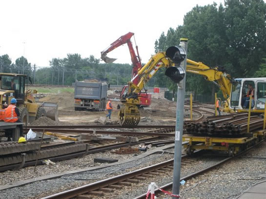
Sloop van de oude sporen. Op de voorgrond de testinfrastructuur voor het ZUB-spoorbeveiligingssysteem van spoor 130.
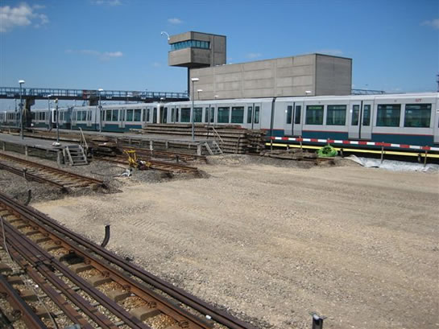
Wat resteert is een lege vlakte, waarop de nieuwe railbedding gestort wordt.
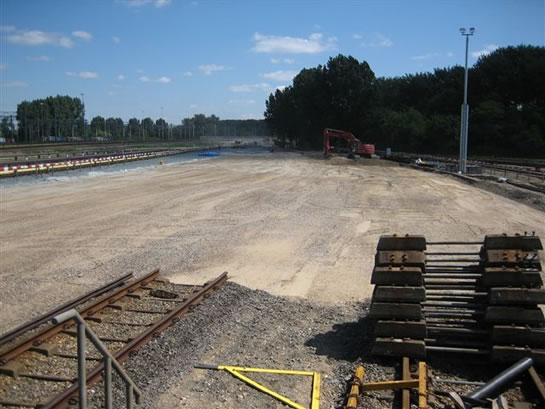
De sporen worden ieder met 80 meter verlengd.
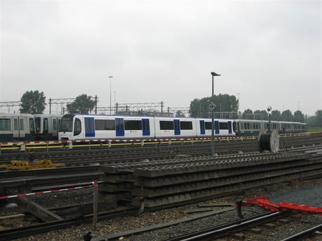
Op de voorgrond zijn de nieuw aangelegde sporen reeds te zien. Op de achtergrond rijtuig 5503, dat net opgehaald wordt door de rijtuigen 5301 en 5411.
Camerasysteem
Vorige week werd in een nieuwsitem gemeld dat diverse metrorijtuigen bij wijze van proef voorzien worden van een camerabewakingsysteem binnen het voertuig. Daarbij zijn niet de juiste rijtuigen opgesomd. Het gaat voorlopig om de volgende metrorijtuigen: 5301, 5330, 5335 en 5338. Deze rijtuigen hebben bij de inbouw van het systeem aanpassingen gehad aan de automatische koppelingen, waardoor niet gekoppeld mag worden met ander materieel. Dit om eventuele schade aan de koppelingen te voorkomen.
Kralingse Zoom
Diverse onderdelen van station Kralingse Zoom zijn onlangs opnieuw geverfd. De dakconstructie die zich boven de sporen 2 en 3 bevindt is in een fellere kleur rood geschilderd. Deze werkzaamheden werden in de nachtelijke uren uitgevoerd. Ook de draagkolommen van de dakconstructie op de perrons zijn rood gelakt.
Bouwput Centraal Station
Op zaterdag 31 mei konden belangstellenden de bouwput van het nieuwe metrostation Centraal bezichtigen. Het metrostation wordt met het oog op RandstadRail uitgebreid van een tweesporig naar een driesporig station. Inmiddels is de tunnelbak van het huidige metrostation compleet uitgegraven. Om de huidige tunnelbak is een soort grote zaal opgetrokken uit gewapend beton. Wat resteert is de afbouw van de vloeren, waarna de huidige tunnelbak gesloopt wordt. Er ontstaat dan een grote ruimte waarin het nieuwe metrostation gefaseerd opgebouwd zal worden.
 Foto's met dank aan Ron Sprangers.
Foto's met dank aan Ron Sprangers.
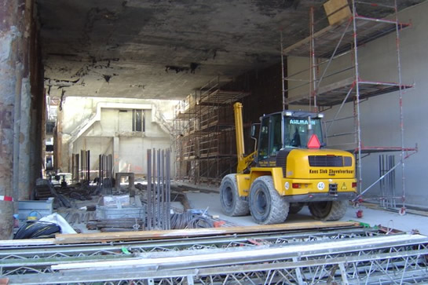
Op de achtergrond de huidige tunnel, die in 1968 in gebruik genomen werd.
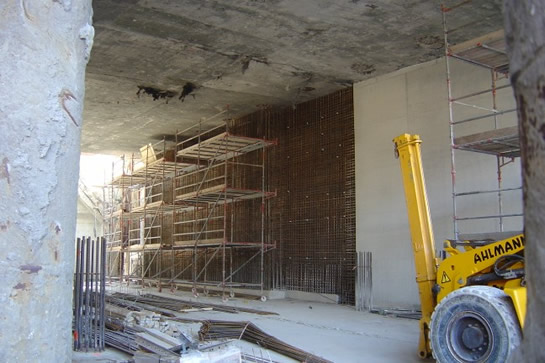
Er wordt een nieuwe wand van gewapend beton opgetrokken.
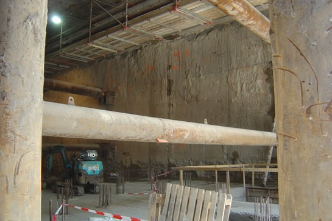
De horizontale cilinders zorgen er mede voor dat de de muren stevig blijven staan en niet bezwijken onder het gewicht van de grond en het grondwater.
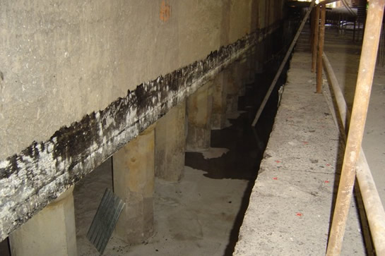
Fundering onder de oude metrotunnel.
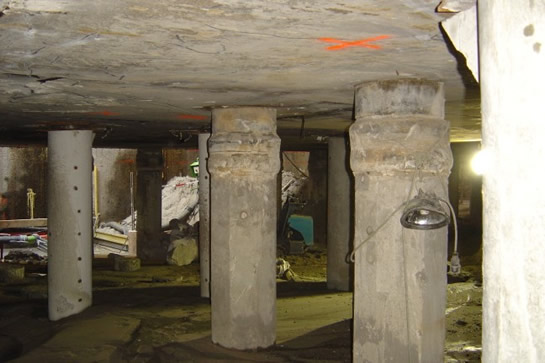
Een doorkijkje onder de metrotunnel.